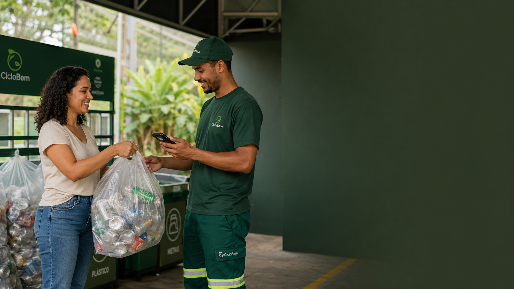
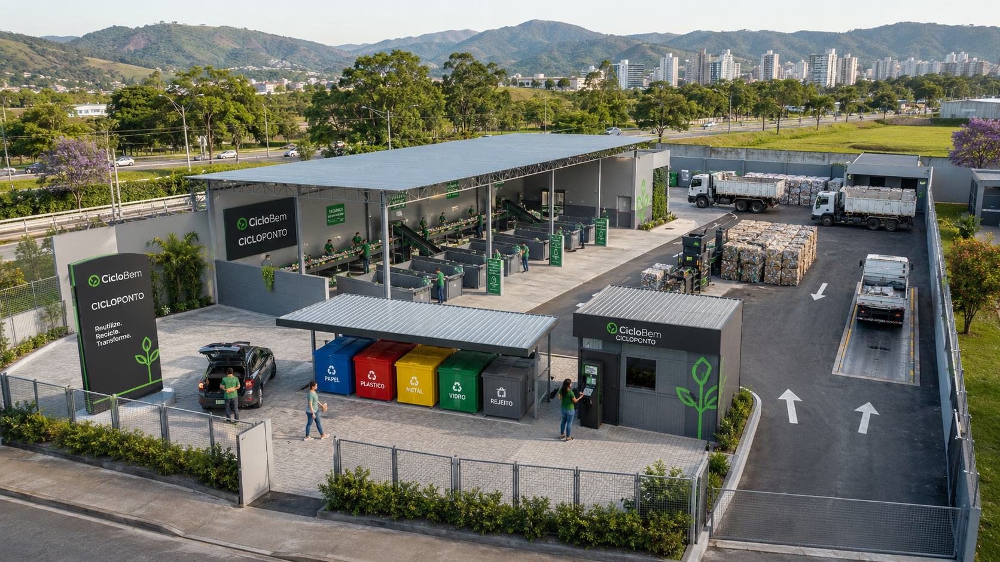
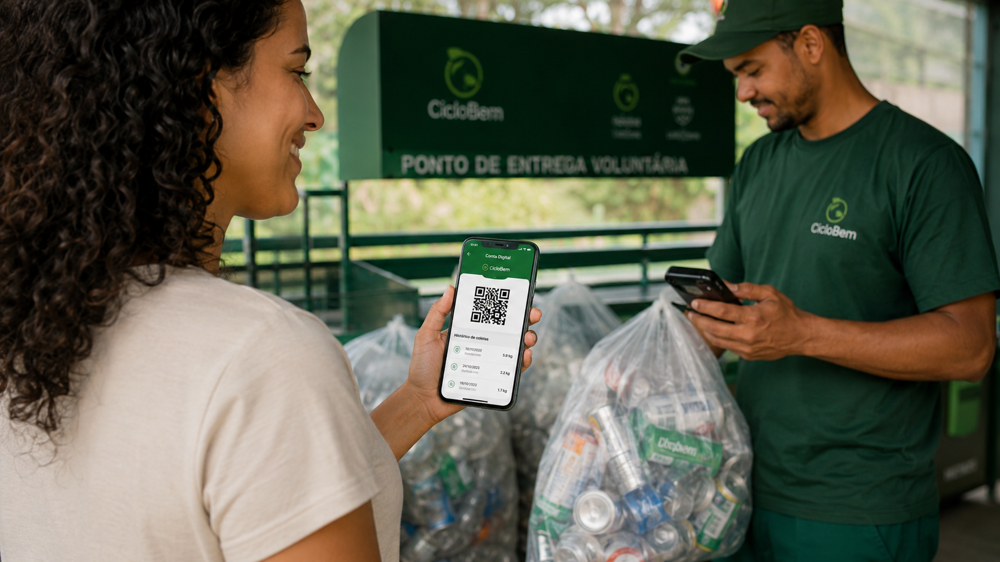
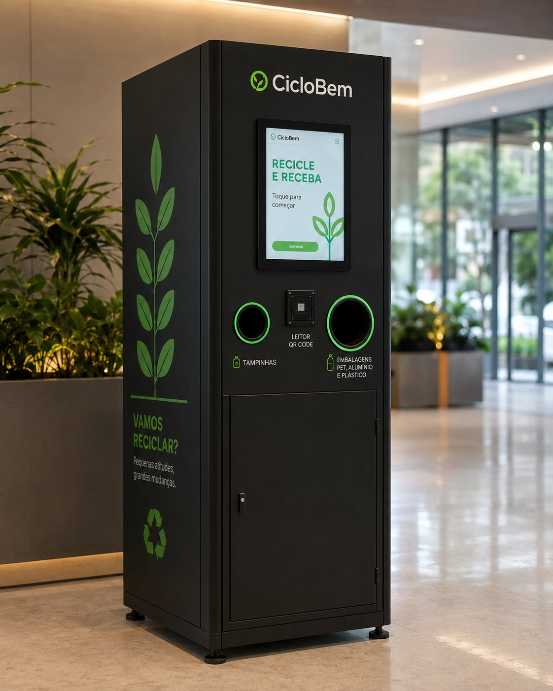
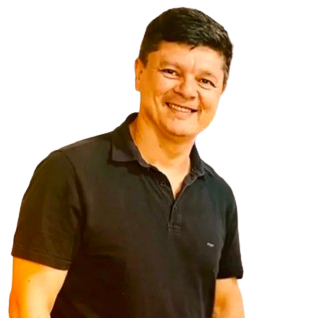
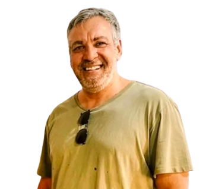

Infraestrutura tecnológica para uma
economia circular rastreável.
A CicloBem conecta coleta, operação, dados, impacto social e gestão para transformar resíduos recicláveis em valor econômico mensurável — com rastreabilidade de ponta a ponta.
Resultados do Piloto Operacional

CicloPonto
Coleta, pesagem e evidência
Plataforma
Dados, estoque e rastreabilidade
Conta Digital
Saldo, QR Code e histórico
Relatórios
ESG, prestação de contas e impacto
Tecnologia construída a partir de
operação real.
Antes de ser uma plataforma, a CicloBem foi validada em campo. A experiência operacional em Eco Pontos no Rio de Janeiro demonstrou o potencial de unir reciclagem, remuneração, dados e inclusão social em um fluxo rastreável.
Piloto no Rio de Janeiro (2022-2023)
13 Eco Pontos operaram em comunidades cariocas por aproximadamente 24 meses, com operação real de coleta, triagem e distribuição de renda para a população local.
Impacto mensurável
Aproximadamente 290 toneladas de resíduos processados e cerca de R$345 mil distribuídos em renda direta para mais de 4.000 beneficiários cadastrados.
Aprendizado operacional
A experiência de campo gerou expertise em logística de coleta, gestão de materiais, registro de dados operacionais e relacionamento com comunidades.
Base para a plataforma
Os dados e processos validados em campo fundamentam a arquitetura da plataforma tecnológica em implantação, garantindo aderência à realidade operacional.

Por que a economia circular
precisa de infraestrutura tecnológica.
O setor de reciclagem enfrenta desafios estruturais que impedem a geração de valor e a comprovação de impacto. A CicloBem resolve esses gargalos com tecnologia.
Baixa rastreabilidade
A cadeia de reciclagem opera sem registros confiáveis. Não há como comprovar origem, destino e volume de materiais processados.
Informalidade e desconexão
Coleta, triagem, estoque e pagamento operam de forma fragmentada. Falta integração entre os atores da cadeia.
Dificuldade de comprovar impacto
Empresas e governos não conseguem gerar dados confiáveis de destinação e impacto ambiental para relatórios ESG e prestação de contas.
Ausência de dados estruturados
Sem dados operacionais confiáveis, não há base para decisões, auditorias, relatórios ou acesso a créditos e certificações.
Fluxo operacional rastreável
de ponta a ponta.
A CicloBem estrutura todo o fluxo da reciclagem em uma cadeia de dados auditável — do cidadão ao relatório de impacto.
Cidadão / Coleta
Cidadão leva recicláveis ao ponto de coleta e se identifica via QR Code
CicloPonto
Registro de entrada com identificação de material, peso e evidência fotográfica
Estoque rastreável
Material entra no controle de estoque com rastreabilidade por tipo, peso e origem
Histórico auditável
Registro operacional de cada coleta, peso e movimentação — histórico auditável
Conta Digital
Cidadão acompanha saldo, histórico de coletas e dados de participação
Relatórios e indicadores
Dados estruturados para gestão, relatórios ESG e prestação de contas
Ecossistema tecnológico
integrado.
A plataforma CicloBem é composta por módulos que cobrem toda a cadeia operacional — da coleta à gestão, do cidadão ao relatório.
Painel Administrativo
Gestão operacional de materiais, clientes, coletas, estoque, movimentações, logs e integridade dos dados.
Em implantaçãoApp CicloPonto
Aplicativo operacional dos pontos de coleta. Registro de entrada, pesagem, identificação e evidência fotográfica.
Em implantaçãoConta Digital CicloBem
Interface do cidadão para acompanhar coletas, saldo, QR Code de identificação, histórico e participação.
Em implantaçãoNúcleo da Plataforma
Camada de integração entre módulos, autenticação, controle de estoque, evidências e rastreabilidade completa.
Em implantaçãoRastreabilidade e Evidencias
Registro fotografico, dados de peso, tipo de material, timestamp e histórico auditável de cada operação.
Em implantaçãoDados e Relatorios
Indicadores operacionais, dados de impacto, relatórios de gestão e informações estruturadas para stakeholders.
Em implantaçãoA jornada do cidadão
A Conta Digital CicloBem aproxima o cidadão da operação, permitindo identificação por QR Code, acompanhamento de histórico e participação em programas de reciclagem remunerada.

Uma plataforma,
multiplos públicos.
A CicloBem atende diferentes perfis com solucoes especificas para cada necessidade.
Para Empresas
Dados estruturados para relatórios ESG, comprovação de logística reversa e engajamento com comunidades em programas de economia circular.
Para Prefeituras
Apoio a coleta seletiva com dados operacionais, gestão de Eco Pontos, inclusão de catadores e informações estruturadas para prestação de contas.
Para Cooperativas e Operadores
Digitalização da operação de coleta e triagem, com registro de entrada de materiais, histórico e gestão de estoque rastreável.
Para Cidadãos
Participação ativa na economia circular com identificação, acompanhamento de coletas e histórico de contribuição ambiental.
Para Investidores e Parceiros
Infraestrutura escalável, validação em campo, mercado crescente e tese de impacto social, ambiental e econômico no setor de economia circular.
Tecnologia para rastrear, comprovar
e escalar operações de reciclagem.
A CicloBem organiza dados, evidências e jornadas operacionais em uma plataforma integrada, preparada para apoiar gestão, prestação de contas e programas de impacto.
Rastreabilidade operacional
Cada coleta pode ser conectada ao ponto de origem, material, peso, evidência, cidadão e histórico da operação.
Evidências digitais
Registros fotográficos e dados estruturados fortalecem a comprovação da operação e reduzem falhas de auditoria.
Gestão integrada
Painel Administrativo, CicloPonto e Conta Digital CicloBem trabalham em uma mesma jornada operacional — com dados conectados de ponta a ponta.
Dados para decisão
Indicadores consolidados apoiam gestão, relatórios ESG, prestação de contas e acompanhamento de impacto.
Identificação simples
QR Code do cidadão e registros operacionais facilitam participação, rastreabilidade e histórico individual.
Integrações futuras
A plataforma foi pensada para evoluir com parceiros de pagamento, automação, inteligência operacional e certificações, quando aplicável.
Dados para decisão
Dados operacionais organizados ajudam empresas, prefeituras e operadores a acompanhar desempenho, impacto e prestação de contas.
Transparência sobre o
estágio da plataforma.
Separamos com clareza o que já foi validado, o que está em implantação e o que faz parte do roadmap futuro.
Validado
- Experiência operacional em 13 Eco Pontos
- Registro de coletas em campo
- Histórico operacional do piloto
- Dados de impacto social e ambiental
- Relacionamento com comunidades
- Logística de coleta e triagem
Em implantação
- Plataforma SaaS CicloBem
- Painel Administrativo
- App CicloPonto
- Conta Digital do cidadão
- Histórico auditável
- Evidência fotográfica
- Núcleo da plataforma
- Estoque rastreável
Roadmap
- Integrações com parceiros de pagamento
- Inteligência operacional e antifraude
- CicloMachine (automação de coleta)
- Camadas adicionais de auditoria digital
- Processos futuros de certificação ambiental
- Marketplace de materiais
- Integrações futuras com parceiros especializados
Ecossistema
em evolução.
A CicloBem evolui sua atuação integrando operação física, jornada do cidadão, dados operacionais e novas soluções de automação para ampliar conveniência, capilaridade e rastreabilidade.

CicloMachine
A CicloMachine representa uma frente de inovação para futuras aplicações de coleta assistida, automação e conveniência em ambientes de alto fluxo — como condomínios, centros comerciais e espaços públicos.
Solução em evolução, parte do roadmap de expansão do ecossistema CicloBem.
Resultados validados
em operação real.
Os dados abaixo referem-se ao piloto operacional realizado no Rio de Janeiro entre 2022 e 2023. Representam a experiência que fundamenta a plataforma.
operados
processados
em renda
cadastrados
Dados do piloto operacional no Rio de Janeiro (2022-2023). Valores aproximados baseados em registros operacionais do periodo.
Dimensoes de impacto
Impacto ambiental
Desvio de resíduos de aterros sanitarios, redução de emissoes por destinação adequada e apoio a logística reversa.
Impacto social
Geracao de renda para comunidades, inclusão de catadores na cadeia formal e acesso a servicos para populacoes vulneraveis.
Impacto economico
Valorização de materiais recicláveis, eficiência operacional para empresas e governos, e redução de custos de gestão.
Impacto em dados
Geração de base de dados estruturada para decisões, auditorias, certificações e relatórios de impacto (quando aplicável).
A CicloBem
nasce da prática.
A CicloBem nasceu da experiência direta com a operação de coleta seletiva e reciclagem em comunidades do Rio de Janeiro. A vivência em campo revelou a necessidade de uma infraestrutura tecnológica que integrasse coleta, dados, rastreabilidade e impacto social em um único sistema.
Missão
Construir a infraestrutura tecnológica que torna a economia circular rastreável, mensurável e economicamente viável para todos os atores da cadeia.
Visão
Ser a plataforma de referencia para gestão operacional e rastreabilidade da economia circular no Brasil.
Valores
Fundadores

Ricardo Almeida
Cofundador — Estratégia e Tecnologia
Experiência em projetos técnicos, desenvolvimento comercial B2B e estruturação de soluções para economia circular.

Alexandre Lemos
Cofundador — Operação e Logística
Experiência em logística, implantação operacional e projetos de coleta seletiva em comunidades.
Quer estruturar uma operação de
reciclagem rastreável?
Entre em contato para saber como a CicloBem pode apoiar sua operação, empresa, município ou iniciativa de economia circular.
Fale diretamente
Prefere um contato mais direto? Envie uma mensagem pelo WhatsApp ou e-mail.
WhatsApp contato@ciclobem.com.brLocalização
Rio de Janeiro, RJ — Brasil